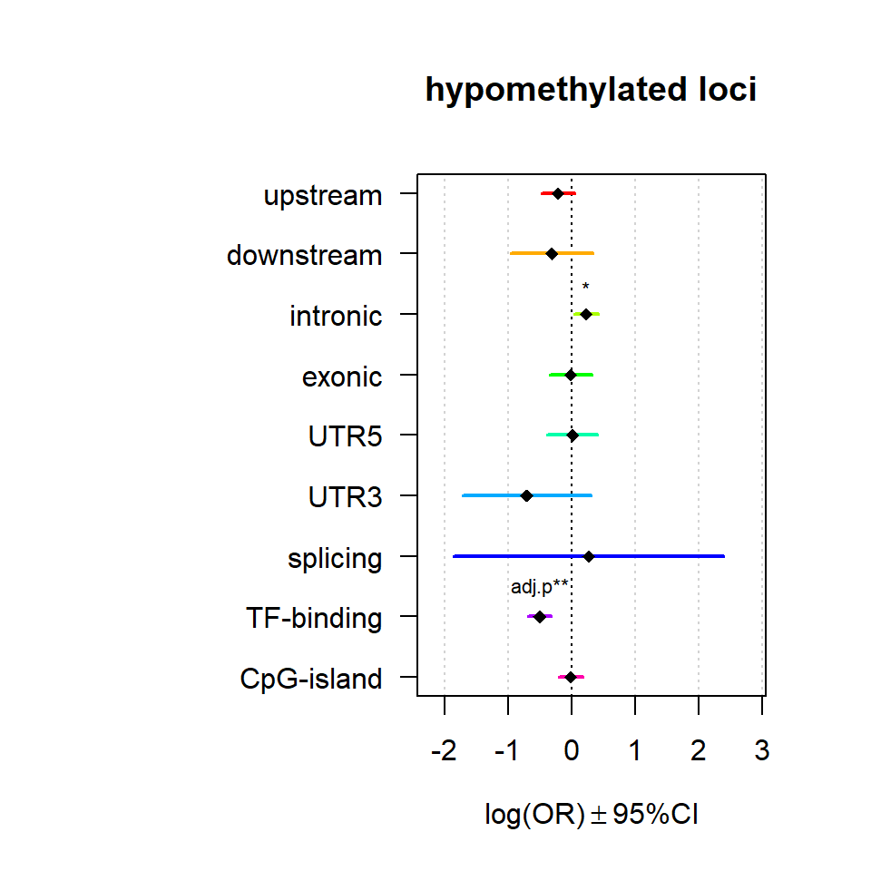
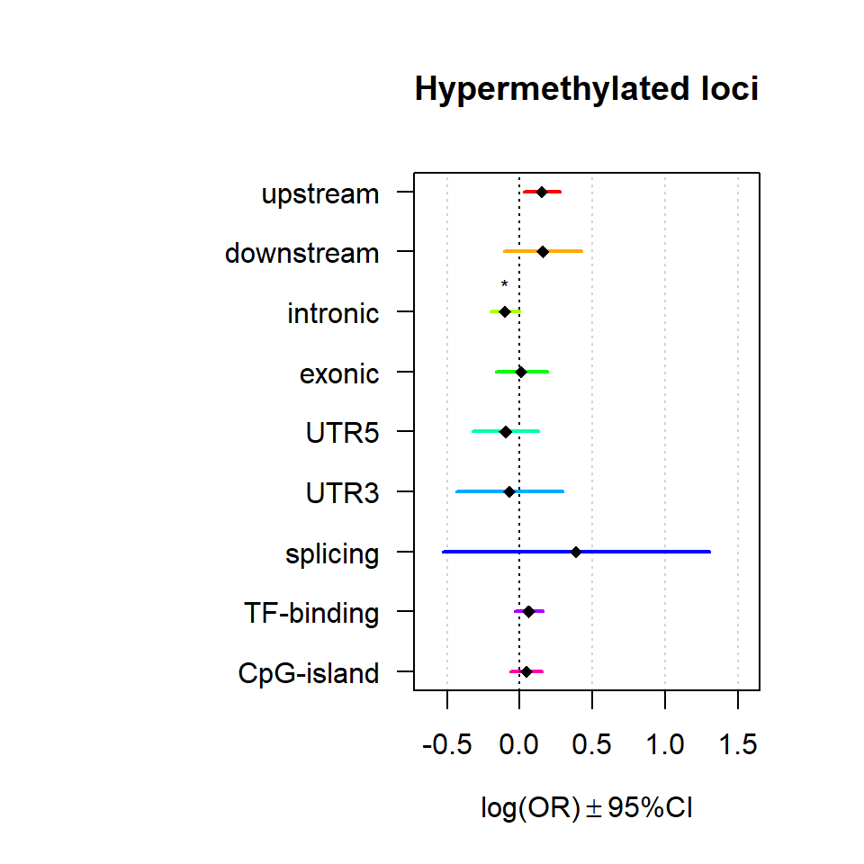

The Methylome in Female Adolescent Conduct Disorder: Neural Pathomechanisms and Environmental Risk Factors
Post-hoc Analyses
AG Chiocchetti
29 Dezember 2020
Last updated: 2021-04-10
Checks: 7 0
Knit directory: femNATCD_MethSeq/
This reproducible R Markdown analysis was created with workflowr (version 1.6.2). The Checks tab describes the reproducibility checks that were applied when the results were created. The Past versions tab lists the development history.
Great! Since the R Markdown file has been committed to the Git repository, you know the exact version of the code that produced these results.
Great job! The global environment was empty. Objects defined in the global environment can affect the analysis in your R Markdown file in unknown ways. For reproduciblity it’s best to always run the code in an empty environment.
The command set.seed(20210128) was run prior to running the code in the R Markdown file. Setting a seed ensures that any results that rely on randomness, e.g. subsampling or permutations, are reproducible.
Great job! Recording the operating system, R version, and package versions is critical for reproducibility.
Nice! There were no cached chunks for this analysis, so you can be confident that you successfully produced the results during this run.
Great job! Using relative paths to the files within your workflowr project makes it easier to run your code on other machines.
Great! You are using Git for version control. Tracking code development and connecting the code version to the results is critical for reproducibility.
The results in this page were generated with repository version 4dee231. See the Past versions tab to see a history of the changes made to the R Markdown and HTML files.
Note that you need to be careful to ensure that all relevant files for the analysis have been committed to Git prior to generating the results (you can use wflow_publish or wflow_git_commit). workflowr only checks the R Markdown file, but you know if there are other scripts or data files that it depends on. Below is the status of the Git repository when the results were generated:
Ignored files:
Ignored: .Rhistory
Ignored: .Rproj.user/
Ignored: analysis/.Rhistory
Ignored: code/.Rhistory
Ignored: data/Epicounts.csv
Ignored: data/Epimeta.csv
Ignored: data/Epitpm.csv
Ignored: data/KangUnivers.txt
Ignored: data/Kang_DataPreprocessing.RData
Ignored: data/Kang_dataset_genesMod_version2.txt
Ignored: data/PatMeta.csv
Ignored: data/ProcessedData.RData
Ignored: data/SNPCommonFilt.csv
Ignored: output/4A76FA10
Ignored: output/DMR_Results.csv
Ignored: output/GOres.xlsx
Ignored: output/LME_Results.csv
Ignored: output/LME_Results_Sig.csv
Ignored: output/LME_Results_Sig_mod.csv
Ignored: output/ProcessedData.RData
Ignored: output/SEM_summary_groupEpi_M15.txt
Ignored: output/SEM_summary_groupEpi_M2.txt
Ignored: output/SEM_summary_groupEpi_M_all.txt
Ignored: output/SEM_summary_groupEpi_TopHit.txt
Ignored: output/SEM_summary_groupEpi_all.txt
Ignored: output/SEMplot_Epi_M15.html
Ignored: output/SEMplot_Epi_M15.png
Ignored: output/SEMplot_Epi_M15_files/
Ignored: output/SEMplot_Epi_M2.html
Ignored: output/SEMplot_Epi_M2.png
Ignored: output/SEMplot_Epi_M2_files/
Ignored: output/SEMplot_Epi_M_all.html
Ignored: output/SEMplot_Epi_M_all.png
Ignored: output/SEMplot_Epi_M_all_files/
Ignored: output/SEMplot_Epi_TopHit.html
Ignored: output/SEMplot_Epi_TopHit.png
Ignored: output/SEMplot_Epi_TopHit_files/
Ignored: output/SEMplot_Epi_all.html
Ignored: output/SEMplot_Epi_all.png
Ignored: output/SEMplot_Epi_all_files/
Ignored: output/circos_DMR_tags.svg
Ignored: output/circos_LME_tags.svg
Ignored: output/clinFact.RData
Ignored: output/dds_filt_analyzed.RData
Ignored: output/designh0.RData
Ignored: output/designh1.RData
Ignored: output/envFact.RData
Ignored: output/gostres.pdf
Ignored: output/modelFact.RData
Ignored: output/resdmr.RData
Ignored: output/resultsdmr_table.RData
Ignored: output/table1_filtered.Rmd
Ignored: output/table1_filtered.docx
Ignored: output/table1_unfiltered.Rmd
Ignored: output/table1_unfiltered.docx
Ignored: setup_built.R
Note that any generated files, e.g. HTML, png, CSS, etc., are not included in this status report because it is ok for generated content to have uncommitted changes.
These are the previous versions of the repository in which changes were made to the R Markdown (analysis/03_01_Posthoc_analyses_Gene_Enrichment.Rmd) and HTML (docs/03_01_Posthoc_analyses_Gene_Enrichment.html) files. If you’ve configured a remote Git repository (see ?wflow_git_remote), click on the hyperlinks in the table below to view the files as they were in that past version.
| File | Version | Author | Date | Message |
|---|---|---|---|---|
| Rmd | 4dee231 | achiocch | 2021-04-10 | wflow_publish(c(“analysis/", "code/”, "docs/*")) |
| html | 91de221 | achiocch | 2021-04-05 | Build site. |
| Rmd | b6c6b33 | achiocch | 2021-04-05 | updated GO function, and model def |
| html | 4ea1bba | achiocch | 2021-02-25 | Build site. |
| Rmd | 6c21638 | achiocch | 2021-02-25 | wflow_publish(c(“analysis/", "code/”, "docs/*"), update = F) |
| html | 6c21638 | achiocch | 2021-02-25 | wflow_publish(c(“analysis/", "code/”, "docs/*"), update = F) |
Genomic location enrichment
Significant loci with a p-value <= 0.01 and a absolute log2 fold-change lager 0.5 were tested for enrichment in annotated genomic feature using fisher exact test.
Ranges=rowData(dds_filt)
TotTagsofInterest=sum(Ranges$WaldPvalue_groupCD<=thresholdp & abs(Ranges$groupCD)>thresholdLFC)
Resall=data.frame()
index = Ranges$WaldPvalue_groupCD<=thresholdp& abs(Ranges$groupCD)>thresholdLFC
for (feat in unique(Ranges$feature)){
tmp=table(Ranges$feature == feat, signif=index)
resfish=fisher.test(tmp)
res = c(resfish$estimate, unlist(resfish$conf.int), resfish$p.value)
Resall = rbind(Resall, res)
}
tmp=table(Ranges$tf_binding!="", signif=index)
resfish=fisher.test(tmp)
res = c(resfish$estimate, unlist(resfish$conf.int), resfish$p.value)
Resall = rbind(Resall, res)
tmp=table(Ranges$cpg=="cpg", signif=index)
resfish=fisher.test(tmp)
res = c(resfish$estimate, unlist(resfish$conf.int), resfish$p.value)
Resall = rbind(Resall, res)
colnames(Resall)=c("OR", "CI95L", "CI95U", "P")
rownames(Resall)=c(unique(Ranges$feature), "TF-binding", "CpG-island")
Resall$Beta = log(Resall$OR)
Resall$SE = (log(Resall$OR)-log(Resall$CI95L))/1.96
Resall$Padj=p.adjust(Resall$P, method = "bonferroni")
Resdown=data.frame()
index = Ranges$WaldPvalue_groupCD<=thresholdp & Ranges$groupCD<thresholdLFC
for (feat in unique(Ranges$feature)){
tmp=table(Ranges$feature == feat, signif=index)
resfish=fisher.test(tmp)
res = c(resfish$estimate, unlist(resfish$conf.int), resfish$p.value)
Resdown = rbind(Resdown, res)
}
tmp=table(Ranges$tf_binding!="", signif=index)
resfish=fisher.test(tmp)
res = c(resfish$estimate, unlist(resfish$conf.int), resfish$p.value)
Resdown = rbind(Resdown, res)
tmp=table(Ranges$cpg=="cpg", signif=index)
resfish=fisher.test(tmp)
res = c(resfish$estimate, unlist(resfish$conf.int), resfish$p.value)
Resdown = rbind(Resdown, res)
colnames(Resdown)=c("OR", "CI95L", "CI95U", "P")
rownames(Resdown)=c(unique(Ranges$feature), "TF-binding", "CpG-island")
Resdown$Beta = log(Resdown$OR)
Resdown$SE = (log(Resdown$OR)-log(Resdown$CI95L))/1.96
Resdown$Padj=p.adjust(Resdown$P, method = "bonferroni")
Resup=data.frame()
index = Ranges$WaldPvalue_groupCD<=thresholdp & Ranges$groupCD>thresholdLFC
for (feat in unique(Ranges$feature)){
tmp=table(Ranges$feature == feat, signif=index)
resfish=fisher.test(tmp)
res = c(resfish$estimate, unlist(resfish$conf.int), resfish$p.value)
Resup = rbind(Resup, res)
}
tmp=table(Ranges$tf_binding!="", signif=index)
resfish=fisher.test(tmp)
res = c(resfish$estimate, unlist(resfish$conf.int), resfish$p.value)
Resup = rbind(Resup, res)
tmp=table(Ranges$cpg=="cpg", signif=index)
resfish=fisher.test(tmp)
res = c(resfish$estimate, unlist(resfish$conf.int), resfish$p.value)
Resup = rbind(Resup, res)
colnames(Resup)=c("OR", "CI95L", "CI95U", "P")
rownames(Resup)=c(unique(Ranges$feature), "TF-binding", "CpG-island")
Resup$Beta = log(Resup$OR)
Resup$SE = (log(Resup$OR)-log(Resup$CI95L))/1.96
Resup$Padj=p.adjust(Resup$P, method = "bonferroni")
multiORplot(Resall, Pval = "P", Padj = "Padj", beta="Beta",SE = "SE", pheno="All diff. methylated loci")
multiORplot(Resup, Pval = "P", Padj = "Padj", beta="Beta",SE = "SE", pheno="hypomethylated loci")
multiORplot(Resdown, Pval = "P", Padj = "Padj", beta="Beta",SE = "SE", pheno="Hypermethylated loci")
GO-term Enrichment
Significant loci and differentially methylated regions with a p-value <= 0.01 and an absolute log2 fold-change lager 0.5 were tested for enrichment among GO-terms Molecular Function, Cellular Compartment and Biological Processes, KEGG pathways, Transcription factor Binding sites, Human Protein Atlas Tissue Expression, Human Phenotypes.
getGOresults = function(geneset, genereference){
resgo = gost(geneset, organism = "hsapiens",
correction_method = "g_SCS",
domain_scope = "custom",
sources = c("GO:BP", "GO:MF", "GO:CC"),
custom_bg = genereference)
if(length(resgo) != 0){
return(resgo)
} else {
print("no significant results")
return(NULL)
}
}
gene_univers = getuniquegenes(as.data.frame(rowRanges(dds_filt))$gene)
idx = (results_Deseq$pvalue <= thresholdp &
(abs(results_Deseq$log2FoldChange) > thresholdLFC))
genes_reg = getuniquegenes(as.data.frame(rowRanges(dds_filt))$gene[idx])
dmr_genes = unique(resultsdmr_table$name[resultsdmr_table$p.value<=thresholdp &
abs(resultsdmr_table$value)>=thresholdLFC])
Genes_of_interset = list("01_dmregions" = dmr_genes,
"02_dmtag" = genes_reg
)
gostres = getGOresults(Genes_of_interset, gene_univers)
gostplot(gostres, capped = TRUE, interactive = T)p = gostplot(gostres, capped = TRUE, interactive = F)
toptab = gostres$result
pp = publish_gostplot(p, filename = paste0(Home,"/output/gostres.pdf"))The image is saved to C:/Users/chiocchetti/Projects/femNATCD_MethSeq/output/gostres.pdfwrite.xlsx2(toptab, file = paste0(Home,"/output/GOres.xlsx"), sheetName = "GO_enrichment")Kang Brain Module Enrichments
Gene sets identified to be deferentially methylated with a p-value <= 0.01 and an absolute log2 fold-change larger 0.5 were tested for enrichment among gene-modules coregulated during Brain expression.
# define Reference Universe
KangUnivers<- read.table(paste0(Home,"/data/KangUnivers.txt"), sep="\t", header=T)
colnames(KangUnivers)<-c("EntrezId","Symbol")
Kang_genes<-read.table(paste0(Home,"/data/Kang_dataset_genesMod_version2.txt"),sep="\t",header=TRUE)
#3)Generate Gene universe to be used for single gene lists
tmp=merge(KangUnivers,Kang_genes,by.y="EntrezGene",by.x="EntrezId",all=TRUE) #18826
KangUni_Final<-tmp[duplicated(tmp$EntrezId)==FALSE,] #18675
# Local analysis gene universe
Annotation_list<-data.frame(Symbol = gene_univers)
# match modules
Annotation_list$Module = Kang_genes$Module[match(Annotation_list$Symbol,Kang_genes$symbol)]
# check if overlapping in gene universes
Annotation_list$univers = Annotation_list$Symbol %in% KangUni_Final$Symbol
# drop duplicates
Annotation_list = Annotation_list[duplicated(Annotation_list$Symbol)==FALSE,]
# selct only genes that have been detected on both datasets
Annotation_list = Annotation_list[Annotation_list$univers==T,]
# final reference
UniversalGeneset=Annotation_list$Symbol
# define Gene lists to test
# sort and order Modules to be teste
Modules=unique(Annotation_list$Module)
Modules = Modules[! Modules %in% c(NA, "")]
Modules = Modules[order(as.numeric(gsub("M","",Modules)))]
GL_all=list()
for(i in Modules){
GL_all[[i]]=Annotation_list$Symbol[Annotation_list$Module%in%i]
}
GL_all[["M_all"]]=Kang_genes$symbol[Kang_genes$Module %in% Modules]
GOI1 = Genes_of_interset
Resultsall=list()
for(j in names(GOI1)){
Res = data.frame()
for(i in names(GL_all)){
Modulegene=GL_all[[i]]
Factorgene=GOI1[[j]]
Testframe<-fisher.test(table(factor(UniversalGeneset %in% Factorgene,levels=c("TRUE","FALSE")),
factor(UniversalGeneset %in% Modulegene,levels=c("TRUE","FALSE"))))
beta=log(Testframe$estimate)
Res[i, "beta"] =beta
Res[i, "SE"]=abs(beta-log(Testframe$conf.int[1]))/1.96
Res[i, "Pval"]=Testframe$p.value
Res[i, "OR"]=(Testframe$estimate)
Res[i, "ORL"]=(Testframe$conf.int[1])
Res[i, "ORU"]=(Testframe$conf.int[2])
}
Res$Padj = p.adjust(Res$Pval, method = "bonferroni")
Resultsall[[j]] = Res
}
par(mfrow = c(2,1))
for (i in names(Resultsall)){
multiORplot(datatoplot = Resultsall[[i]], pheno=i)
}
Modsig = c()
for(r in names(Resultsall)){
a=rownames(Resultsall[[r]])[Resultsall[[r]]$Padj<=0.05]
Modsig = c(Modsig,a)
}
# show brains TODO
Modisg=unique(Modsig)
load(paste0(Home,"/data/Kang_DataPreprocessing.RData")) #Load the Kang expression data of all genes
datExprPlot=matriz #Expression data of Kang loaded as Rdata object DataPreprocessing.RDataSEM
dropfact=c("site")
Patdata=as.data.frame(colData(dds_filt))
load(paste0(Home, "/output/envFact.RData"))
load(paste0(Home, "/output/modelFact.RData"))
envFact=envFact[!envFact %in% dropfact]
modelFact=modelFact[!modelFact %in% dropfact]
EpiMarker = c()
# TopHit
Patdata$Epi_TopHit=log2_cpm[base::which.min(results_Deseq$pvalue),]
# 1PC of all diff met
tmp=glmpca(log2_cpm[base::which(results_Deseq$pvalue<=thresholdp),], 1)
Patdata$Epi_all= tmp$factors$dim1
EpiMarker = c(EpiMarker, "Epi_TopHit", "Epi_all")
#Brain Modules
Epitestset=GL_all[Modisg]
for(n in names(Epitestset)){
index=gettaglistforgenelist(genelist = Epitestset[[n]], dds_filt)
index = base::intersect(index, base::which(results_Deseq$pvalue<=thresholdp))
# get eigenvalue
epiname=paste0("Epi_",n)
tmp=glmpca(log2_cpm[index,], 1)
Patdata[,epiname]= tmp$factors$dim1
EpiMarker = c(EpiMarker, epiname)
}
cormat = cor(apply(Patdata[,c("group", envFact, modelFact, EpiMarker)] %>% mutate_all(as.numeric), 2, minmax_scaling),
use = "pairwise.complete.obs")
par(mfrow=c(1,2))
corrplot(cormat, main="correlations")
corrplot(cormat, order = "hclust", main="scaled correlations")
fullmodEnv=paste(envFact,modelFact, sep = "+", collapse = "+")
Dataset = Patdata[,c("group", envFact,modelFact,EpiMarker)]
model = paste0("group ~ Epi+", fullmodEnv,"
Epi ~" , fullmodEnv,"
Epi~~Epi
group~~group
")
Netlist = list()
for (marker in EpiMarker) {
Dataset$Epi = Dataset[,marker]
Datasetscaled = Dataset %>% mutate_if(is.numeric, minmax_scaling)
Datasetscaled = Datasetscaled %>% mutate_if(is.factor, ~ as.numeric(.)-1)
fit<-lavaan(model,data=Datasetscaled)
sink(paste0(Home,"/output/SEM_summary_group",marker,".txt"))
summary(fit)
fitMeasures(fit)
sink()
#SOURCE FOR PLOT https://stackoverflow.com/questions/51270032/how-can-i-display-only-significant-path-lines-on-a-path-diagram-r-lavaan-sem
restab=lavaan::standardizedSolution(fit) %>% dplyr::filter(!is.na(pvalue)) %>%
arrange(desc(pvalue)) %>% mutate_if("is.numeric","round",3) %>%
dplyr::select(-ci.lower,-ci.upper,-z)
pvalue_cutoff <- 0.05
obj <- semPlot:::semPlotModel(fit)
original_Pars <- obj@Pars
check_Pars <- obj@Pars %>% dplyr:::filter(!(edge %in% c("int","<->") | lhs == rhs)) # this is the list of parameter to sift thru
keep_Pars <- obj@Pars %>% dplyr:::filter(edge %in% c("int","<->") | lhs == rhs) # this is the list of parameter to keep asis
test_against <- lavaan::standardizedSolution(fit) %>% dplyr::filter(pvalue < pvalue_cutoff, rhs != lhs)
# for some reason, the rhs and lhs are reversed in the standardizedSolution() output, for some of the values
# I'll have to reverse it myself, and test against both orders
test_against_rev <- test_against %>% dplyr::rename(rhs2 = lhs, lhs = rhs) %>% dplyr::rename(rhs = rhs2)
checked_Pars <-
check_Pars %>% semi_join(test_against, by = c("lhs", "rhs")) %>% bind_rows(
check_Pars %>% semi_join(test_against_rev, by = c("lhs", "rhs"))
)
obj@Pars <- keep_Pars %>% bind_rows(checked_Pars) %>%
mutate_if("is.numeric","round",3) %>%
mutate_at(c("lhs","rhs"),~gsub("Epi", marker,.))
obj@Vars = obj@Vars %>% mutate_at(c("name"),~gsub("Epi", marker,.))
DF = obj@Pars
DF = DF[DF$lhs!=DF$rhs,]
DF = DF[abs(DF$std)>0.1,]
DF = DF[DF$edge == "~>",] # only include directly modelled effects in figure
nodes <- data.frame(id=obj@Vars$name, label = obj@Vars$name)
nodes$color<-Dark8[8]
nodes$color[nodes$label == "group"] = Dark8[3]
nodes$color[nodes$label == marker] = Dark8[4]
nodes$color[nodes$label %in% envFact] = Dark8[5]
edges <- data.frame(from = DF$lhs,
to = DF$rhs,
width=abs(DF$std),
arrows ="to")
edges$dashes = F
edges$label = DF$std
edges$color=Dark8[1:2][factor(sign(DF$std), levels=c(-1,0,1),labels=c(1,2,2))]
plotnet<- visNetwork(nodes, edges,
main=list(text=marker,
style="font-family:arial;font-size:20px;text-align:center"),
submain=list(text="significant paths", style="font-family:arial;text-align:center")) %>%
visEdges(arrows =list(to = list(enabled = TRUE, scaleFactor = 0.7))) %>%
visPhysics(enabled = T, solver = "forceAtlas2Based")
Netlist[[marker]] = plotnet
htmlfile = paste0(Home,"/output/SEMplot_",marker,".html")
visSave(plotnet, htmlfile)
webshot(paste0(Home,"/output/SEMplot_",marker,".html"), zoom = 1,
file = paste0(Home,"/output/SEMplot_",marker,".png"))
}rmd_paths <-paste0(tempfile(c(names(Netlist))),".Rmd")
names(rmd_paths) <- names(Netlist)
for (n in names(rmd_paths)) {
sink(file = rmd_paths[n])
cat(" \n",
"```{r, echo = FALSE}",
"Netlist[[n]]",
"```",
sep = " \n")
sink()
}Interactive results SEM analysis
only direct effects with a significant standardized effect of p<0.05 are shown.
for (n in names(rmd_paths)) {
cat(knitr::knit_child(rmd_paths[[n]],
quiet= TRUE))
file.remove(rmd_paths[[n]])
}
sessionInfo()R version 4.0.3 (2020-10-10)
Platform: x86_64-w64-mingw32/x64 (64-bit)
Running under: Windows 10 x64 (build 19042)
Matrix products: default
Random number generation:
RNG: Mersenne-Twister
Normal: Inversion
Sample: Rounding
locale:
[1] LC_COLLATE=German_Germany.1252 LC_CTYPE=German_Germany.1252
[3] LC_MONETARY=German_Germany.1252 LC_NUMERIC=C
[5] LC_TIME=German_Germany.1252
attached base packages:
[1] parallel stats4 stats graphics grDevices utils datasets
[8] methods base
other attached packages:
[1] RCircos_1.2.1 compareGroups_4.4.6
[3] webshot_0.5.2 visNetwork_2.0.9
[5] org.Hs.eg.db_3.12.0 AnnotationDbi_1.52.0
[7] xlsx_0.6.5 gprofiler2_0.2.0
[9] BiocParallel_1.24.1 kableExtra_1.3.1
[11] glmpca_0.2.0 knitr_1.30
[13] DESeq2_1.30.0 SummarizedExperiment_1.20.0
[15] Biobase_2.50.0 MatrixGenerics_1.2.0
[17] matrixStats_0.57.0 GenomicRanges_1.42.0
[19] GenomeInfoDb_1.26.2 IRanges_2.24.1
[21] S4Vectors_0.28.1 BiocGenerics_0.36.0
[23] forcats_0.5.0 stringr_1.4.0
[25] dplyr_1.0.2 purrr_0.3.4
[27] readr_1.4.0 tidyr_1.1.2
[29] tibble_3.0.4 tidyverse_1.3.0
[31] semPlot_1.1.2 lavaan_0.6-7
[33] ggplot2_3.3.3 gplots_3.1.1
[35] corrplot_0.84 RColorBrewer_1.1-2
[37] workflowr_1.6.2
loaded via a namespace (and not attached):
[1] tidyselect_1.1.0 lme4_1.1-26 RSQLite_2.2.2
[4] htmlwidgets_1.5.3 grid_4.0.3 munsell_0.5.0
[7] chron_2.3-56 statmod_1.4.35 withr_2.4.1
[10] colorspace_2.0-0 uuid_0.1-4 OpenMx_2.18.1
[13] rstudioapi_0.13 officer_0.3.16 rJava_0.9-13
[16] huge_1.3.4.1 mi_1.0 git2r_0.28.0
[19] GenomeInfoDbData_1.2.4 mnormt_2.0.2 farver_2.0.3
[22] bit64_4.0.5 rprojroot_2.0.2 coda_0.19-4
[25] vctrs_0.3.6 generics_0.1.0 xfun_0.20
[28] R6_2.5.0 arm_1.11-2 locfit_1.5-9.4
[31] bitops_1.0-6 cachem_1.0.1 DelayedArray_0.16.0
[34] assertthat_0.2.1 promises_1.1.1 scales_1.1.1
[37] nnet_7.3-15 gtable_0.3.0 processx_3.4.5
[40] rlang_0.4.10 genefilter_1.72.0 systemfonts_0.3.2
[43] splines_4.0.3 lazyeval_0.2.2 broom_0.7.3
[46] checkmate_2.0.0 yaml_2.2.1 reshape2_1.4.4
[49] abind_1.4-5 modelr_0.1.8 crosstalk_1.1.1
[52] d3Network_0.5.2.1 backports_1.2.0 httpuv_1.5.5
[55] HardyWeinberg_1.7.1 Hmisc_4.4-2 tools_4.0.3
[58] psych_2.0.12 ellipsis_0.3.1 Rsolnp_1.16
[61] Rcpp_1.0.5 plyr_1.8.6 base64enc_0.1-3
[64] zlibbioc_1.36.0 RCurl_1.98-1.2 rockchalk_1.8.144
[67] ps_1.5.0 rpart_4.1-15 pbapply_1.4-3
[70] qgraph_1.6.5 haven_2.3.1 cluster_2.1.0
[73] fs_1.5.0 magrittr_2.0.1 data.table_1.13.6
[76] openxlsx_4.2.3 flextable_0.6.2 reprex_1.0.0
[79] truncnorm_1.0-8 tmvnsim_1.0-2 matrixcalc_1.0-3
[82] whisker_0.4 mime_0.9 xlsxjars_0.6.1
[85] hms_1.0.0 evaluate_0.14 xtable_1.8-4
[88] XML_3.99-0.5 jpeg_0.1-8.1 readxl_1.3.1
[91] gridExtra_2.3 compiler_4.0.3 mice_3.12.0
[94] writexl_1.3.1 KernSmooth_2.23-18 crayon_1.3.4
[97] minqa_1.2.4 htmltools_0.5.1.1 corpcor_1.6.9
[100] later_1.1.0.1 Formula_1.2-4 geneplotter_1.68.0
[103] lubridate_1.7.9.2 DBI_1.1.1 kutils_1.70
[106] dbplyr_2.0.0 MASS_7.3-53 boot_1.3-26
[109] Matrix_1.2-18 cli_2.2.0 igraph_1.2.6
[112] BDgraph_2.63 pkgconfig_2.0.3 sem_3.1-11
[115] foreign_0.8-81 plotly_4.9.3 xml2_1.3.2
[118] pbivnorm_0.6.0 annotate_1.68.0 XVector_0.30.0
[121] rvest_0.3.6 callr_3.5.1 digest_0.6.27
[124] rmarkdown_2.6 cellranger_1.1.0 htmlTable_2.1.0
[127] lisrelToR_0.1.4 gdtools_0.2.3 shiny_1.6.0
[130] gtools_3.8.2 rjson_0.2.20 nloptr_1.2.2.2
[133] lifecycle_0.2.0 nlme_3.1-151 glasso_1.11
[136] jsonlite_1.7.2 carData_3.0-4 viridisLite_0.3.0
[139] fansi_0.4.1 pillar_1.4.7 lattice_0.20-41
[142] fastmap_1.1.0 httr_1.4.2 survival_3.2-7
[145] glue_1.4.2 zip_2.1.1 fdrtool_1.2.16
[148] png_0.1-7 bit_4.0.4 stringi_1.5.3
[151] regsem_1.6.2 blob_1.2.1 latticeExtra_0.6-29
[154] caTools_1.18.1 memoise_2.0.0